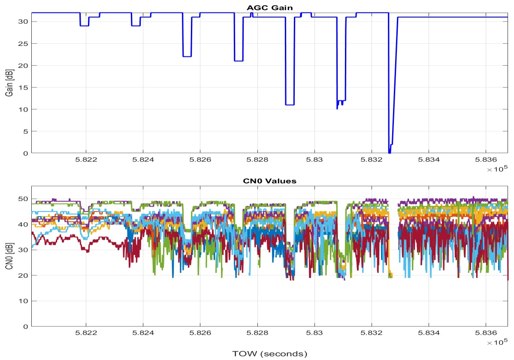
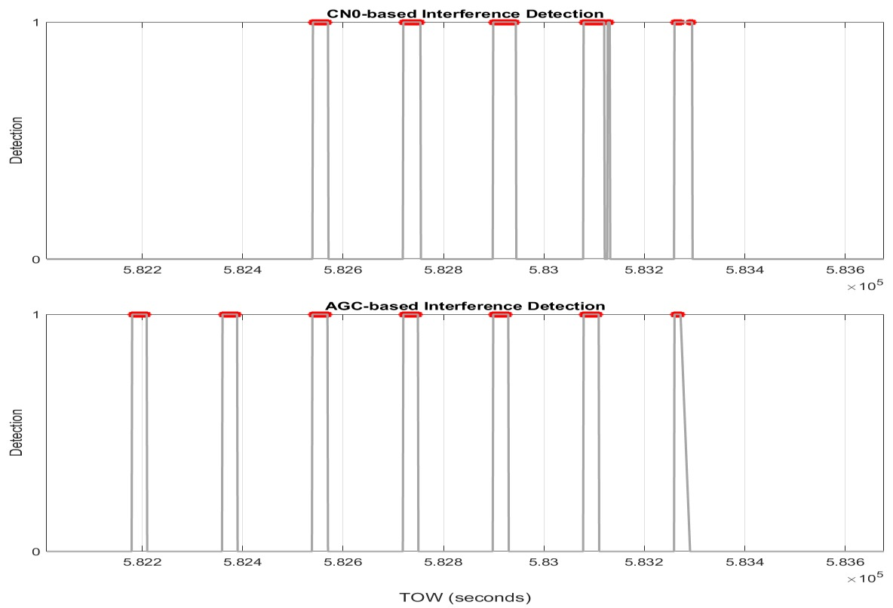

这篇论文的核心是把 GNSS 干扰/欺骗从“信号异常”转成可观测、可检测、可比较的接收机状态变化，并比较 AGC、C/N0 等接收机内部观测量在检测任务中的价值。
1. 原文开篇把问题放在 GNSS 完整性和交通自动化背景下，因此这不是单纯的信号处理实验，而是面向安全关键定位的异常检测问题。
2. 文本线索显示作者关注接收机内部观测量和干扰检测之间的关系；读者应把 AGC/CNO 当作检测链路中的状态量，而不是普通曲线。
3. 从可抽取文本中反复出现的术语看，建议跟踪这些线索：GNSS, AGC, CNO, detection, jamming, spoofing, fusion, robust。
可以把《GNSS Jamming Detection with Automatic Gain Control (AGC) and Carrier-to-Noise Ratio Density (CNO) Observables from a COTS receiver》想成一个“定位系统值班员”的故事：系统平时相信 GNSS，但一旦有人开始干扰或欺骗，最终经纬度跳变往往已经是后果。作者想做的是把告警提前，从接收机内部的 AGC、C/N0、检测量这些细小变化里，判断信号环境是不是开始不对劲。 从摘要抽取到的线索看，后文会围绕 GNSS, jamming, spoofing 展开。
1. 摘要：先把故事讲成一句话
摘要通常先交代问题、方法和结论。读这篇时，可以先抓三个词：它面对什么定位风险，用什么观测或模型解决，最后用什么实验说明有效。文中这一段反复出现的线索是 GNSS, jamming, spoofing。把它翻成工程语言，就是先确认输入观测是否可信，再看这些观测如何变成约束、告警或地图更新，最后看实验有没有覆盖真实失败模式。
2. 引言：为什么这个问题非做不可
引言部分是在搭舞台：真实系统里 GNSS 会被遮挡、欺骗或干扰，传感器会退化，SLAM 会漂移。作者要说服读者，这不是一个漂亮数据集上的小修小补，而是部署时迟早会撞上的问题。文中这一段反复出现的线索是 GNSS, jamming, spoofing。把它翻成工程语言，就是先确认输入观测是否可信，再看这些观测如何变成约束、告警或地图更新，最后看实验有没有覆盖真实失败模式。
3. 方法：作者真正搭了哪台机器
方法章通常先搭建可控的 GNSS 干扰/欺骗场景，再把接收机输出的 AGC、C/N0 或检测器响应拉到同一时间轴上。通俗地说，它不是直接问“位置有没有错”，而是先问“接收机是不是已经开始用力自救”。文中这一段反复出现的线索是 GNSS, AGC, CNO, detection, jamming, spoofing。把它翻成工程语言，就是先确认输入观测是否可信，再看这些观测如何变成约束、告警或地图更新，最后看实验有没有覆盖真实失败模式。
4. 实验：证据链是否站得住
实验章的重点是把干扰区间和观测曲线对齐：弱干扰时谁先响应，强干扰时谁稳定触发，正常波动时谁更不容易误报。这决定了它能不能进入真实完整性监测链路。文中这一段反复出现的线索是 GNSS, GPS, AGC, CNO, IMU, detection。把它翻成工程语言，就是先确认输入观测是否可信，再看这些观测如何变成约束、告警或地图更新，最后看实验有没有覆盖真实失败模式。
5. 结论：论文留下了什么边界
结论部分要反过来看：作者承认了哪些边界，哪些场景还没覆盖，哪些模块以后还要加强。工程读者最该带走的不是一个分数，而是它能迁移到自己系统里的哪一层。文中这一段反复出现的线索是 GNSS, AGC, CNO, detection, jamming, spoofing。把它翻成工程语言，就是先确认输入观测是否可信，再看这些观测如何变成约束、告警或地图更新，最后看实验有没有覆盖真实失败模式。
1. GNSS 在铁路、无人系统和车载定位里常被当作全局位置来源，但它面对干扰、欺骗和遮挡时很脆弱；只看最终位置跳变，往往已经太晚。
2. 这类论文真正关心的不是“能不能检测到一次异常”，而是能不能在低成本接收机和真实噪声背景下稳定地区分干扰、正常波动和接收机状态变化。
3. 从摘要和图注线索看，论文反复围绕 GNSS 展开，说明这些量就是阅读时应优先跟踪的主线。
1. AGC、C/N0 等接收机观测量能否比定位结果更早反映干扰？
2. 在不同干扰强度和时间区间下，哪个检测器更敏感，哪个更容易漏检？
3. 如果把检测结果接入多传感器定位系统，能否作为 GNSS 观测权重或完整性标志使用？
1. 输入层：构造或回放 GNSS 信号，并叠加可控干扰；同时记录接收机输出的 C/N0、AGC gain 等内部状态量。
2. 检测层：把 AGC/CNO 的变化转成事件边界或检测标志，核心是判断这些变化是否和干扰区间一致。
3. 对比层：分别评估 AGC-based detector、CNO-based detector 的响应差异，看低功率干扰、强干扰和不同时间段下的漏检情况。
4. 工程层：最值得借鉴的是“先检测观测可信度，再决定 GNSS 是否参与定位融合”的思路。

图 1 · Figure 1. Time-Frequency representation of linear chirp.
把这张图当成“观测量响应图”来读：干扰发生时，接收机前端的 AGC、C/N0 或检测量会出现同步变化。阅读重点不是曲线本身，而是变化是否清晰、是否和干扰区间对齐、弱干扰时是否仍能被看见。

图 2 · Figure 2. Experimental setup used for GNSS interference detection.
这张图适合当作论文的“主地图”来读：左侧通常是传感器或数据输入，中间是同步、融合、检测、建图或优化模块，右侧是定位、地图或告警输出。读它时不要急着看细节，先沿着箭头走一遍数据流，就能知道作者到底把创新点放在前端观测、后端优化，还是系统组织方式上。
1. 先看实验场景是否可控：干扰信号如何生成、持续多久、功率如何变化、是否有无干扰基线。
2. 再看指标是否和任务一致：检测任务要看漏检、误检、检测延迟，而不只是画出曲线变化。
3. 图里的 AGC/CNO 曲线要和干扰区间对齐看；如果弱干扰下某个指标不响应，就说明它不能单独作为完整性判据。
1. 贡献：把 GNSS 干扰检测落到接收机可观测量上，使检测逻辑更接近真实系统可以在线获取的数据。
2. 贡献：通过不同检测器对比，帮助判断 AGC 与 C/N0 在低功率和强干扰下的适用边界。
3. 局限：如果干扰类型、接收机型号、天线环境变化，阈值和检测规律可能需要重新标定。
4. 局限：检测到干扰不等于完成鲁棒定位，还需要和 INS/视觉/LiDAR 等融合模块共同决定 GNSS 权重。
1. 复现第一步：记录原始 GNSS 观测和接收机状态量，不要只保存最终经纬度。
2. 复现第二步：把干扰/异常区间标注出来，分别评估 AGC、C/N0、残差和定位跳变的响应。
3. 工程接入：把检测结果输出为 GNSS 可信度分数，用来调整融合定位里的观测协方差或剔除策略。
4. 上线前检查：不同接收机、不同天线、不同城市环境都要重新校准阈值，避免把遮挡误判为攻击。
1. 如果攻击不是线性 chirp，而是更隐蔽的 spoofing 或 meaconing，指标是否仍然敏感？
2. 检测器能否输出连续可信度，而不是只输出 0/1 告警？
3. 和 IMU、视觉、LiDAR 融合后，GNSS 异常检测应该在前端、后端还是完整性监测层处理？
图像来自论文 PDF，仅用于论文解读和学术讨论，正式转载前建议核对论文许可和作者要求。